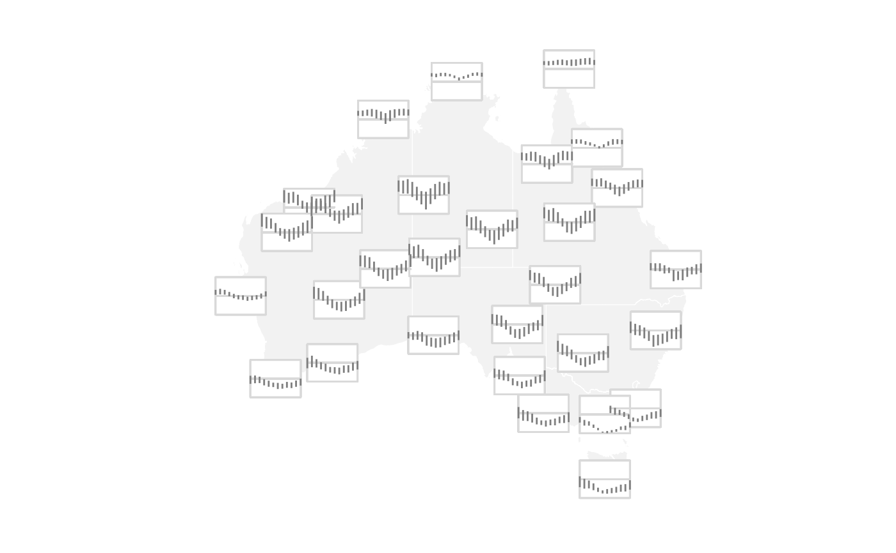

Create a Glyph Segment plot using ggplot2
geom_glyph_segment.RdThis function enables the creation of segment glyphs by defining major coordinates (longitude and latitude) and minor segment structures within a grid cell. Each glyph's appearance can be customized by specifying its height, width, and scaling, allowing for flexible data representation in a visual context.
Usage
geom_glyph_segment(
mapping = NULL,
data = NULL,
stat = "identity",
position = "identity",
...,
x_major = NULL,
x_minor = NULL,
y_major = NULL,
ymin_minor = NULL,
ymax_minor = NULL,
width = ggplot2::rel(2.3),
x_scale = identity,
y_scale = identity,
height = ggplot2::rel(2),
global_rescale = TRUE,
show.legend = NA,
inherit.aes = TRUE
)Arguments
- mapping
Set of aesthetic mappings created by
aes(). If specified andinherit.aes = TRUE(the default), it is combined with the default mapping at the top level of the plot. You must supplymappingif there is no plot mapping.- data
The data to be displayed in this layer. There are three options:
If
NULL, the default, the data is inherited from the plot data as specified in the call toggplot().A
data.frame, or other object, will override the plot data. All objects will be fortified to produce a data frame. Seefortify()for which variables will be created.A
functionwill be called with a single argument, the plot data. The return value must be adata.frame, and will be used as the layer data. Afunctioncan be created from aformula(e.g.~ head(.x, 10)).- stat
The statistical transformation to use on the data for this layer, either as a
ggprotoGeomsubclass or as a string naming the stat stripped of thestat_prefix (e.g."count"rather than"stat_count")- position
Position adjustment, either as a string naming the adjustment (e.g.
"jitter"to useposition_jitter), or the result of a call to a position adjustment function. Use the latter if you need to change the settings of the adjustment.- ...
Other arguments passed on to
layer(). These are often aesthetics, used to set an aesthetic to a fixed value, likecolour = "red"orsize = 3. They may also be parameters to the paired geom/stat.- x_major, x_minor, y_major, ymin_minor, ymax_minor
The name of the variable (as a string) for the major and minor x and y axes.
x_majorandy_majorspecify a longitude and latitude on a map whilex_minor,ymin_minor, andymax_minorprovide the structure for glyph.- y_scale, x_scale
The scaling function to be applied to each set of minor values within a grid cell. The default is
identitywhich produces a result without scaling.- height, width
The height and width of each glyph.
- global_rescale
Determines whether or not the rescaling is performed globally or separately for each individual glyph.
- show.legend
logical. Should this layer be included in the legends?
NA, the default, includes if any aesthetics are mapped.FALSEnever includes, andTRUEalways includes. It can also be a named logical vector to finely select the aesthetics to display.- inherit.aes
If
FALSE, overrides the default aesthetics, rather than combining with them. This is most useful for helper functions that define both data and aesthetics and shouldn't inherit behaviour from the default plot specification, e.g.borders().
Examples
library(ggplot2)
# Basic glyph map with base map and custom theme
aus_temp |>
ggplot(aes(x_major = long, y_major = lat,
x_minor = month, ymin_minor = tmin, ymax_minor = tmax)) +
geom_sf(data = ozmaps::abs_ste, fill = "grey95",
color = "white",inherit.aes = FALSE) +
geom_glyph_segment() +
theme_glyph()

# Adjust width and height of the glyph
aus_temp |>
ggplot(aes(x_major = long, y_major = lat,
x_minor = month, ymin_minor = tmin, ymax_minor = tmax)) +
geom_sf(data = ozmaps::abs_ste, fill = "grey95",
color = "white",inherit.aes = FALSE) +
geom_glyph_segment(width = rel(4.5), height = rel(3)) +
theme_glyph()
# Extend glyph map with reference box and line
aus_temp |>
ggplot(aes(x_major = long, y_major = lat,
x_minor = month, ymin_minor = tmin, ymax_minor = tmax)) +
geom_sf(data = ozmaps::abs_ste, fill = "grey95",
color = "white",inherit.aes = FALSE) +
add_glyph_boxes(width = rel(4.5), height = rel(3)) +
add_ref_lines(width = rel(4.5), height = rel(3)) +
geom_glyph_segment(width = rel(4.5), height = rel(3)) +
theme_glyph()
